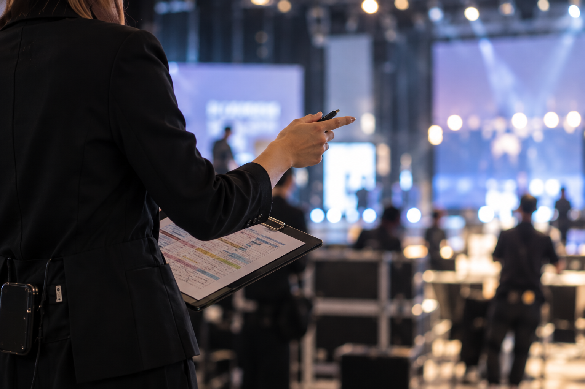
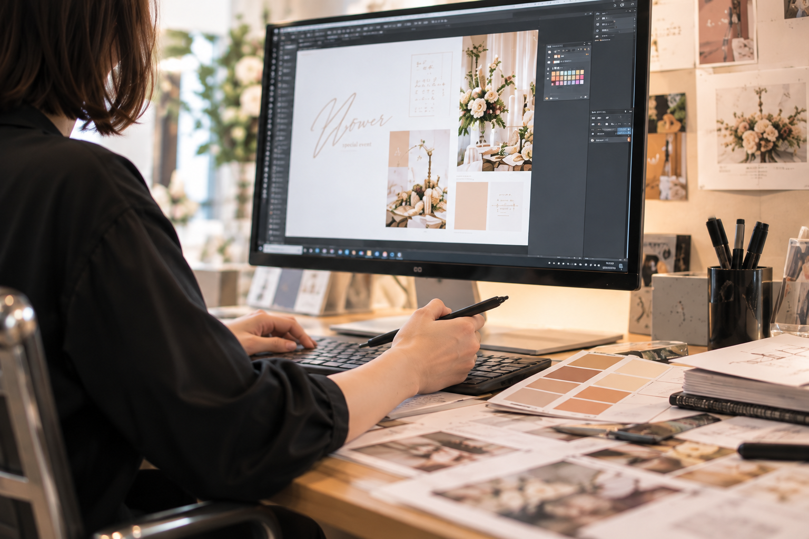

HEARING & PLANNING
ヒアリング・企画立案
お客様との打ち合わせを通して、イベントを開催する目的や背景、実現したいことを丁寧にヒアリング。言葉の奥にある課題やニーズまでくみ取り、企画の軸となる方向性を明確にします。
職種紹介




イベントプランナー
Plan the Special Day!
企画の提案から実現に向けた調整まで、お客様の想いをカタチにする。
企業イベントやパーティー、ホテルイベントなど、目的やご要望はさまざま。
お客様の想いを丁寧にヒアリングし、ターゲットや開催目的に合った企画をご提案します。
コンセプトや演出の方向性を考え、関係者と調整しながら、
お客様が実現したいイベントのかたちを具体化していきます。
HEARING & PLANNING
お客様との打ち合わせを通して、イベントを開催する目的や背景、実現したいことを丁寧にヒアリング。言葉の奥にある課題やニーズまでくみ取り、企画の軸となる方向性を明確にします。
TARGET AUDIENCE ANALYSIS
イベントに参加するターゲットや参加者層を設定し、それぞれに適した企画のあり方を検討。お客様の目的と参加者の視点を掛け合わせ、心に残る体験につながる企画の土台をつくります。
CONCEPT MAKING
ヒアリングした内容をもとに、イベント全体のテーマやコンセプトを立案。タイトルやキャッチコピー、演出の方向性まで一貫して考え、イベントならではの魅力やメッセージを形にします。
PROPOSAL & PRESENTATION
立案したコンセプトや演出案を企画書にまとめ、お客様にプレゼンテーション。企画の意図や実施イメージを具体的に伝え、フィードバックを反映しながら、より魅力的なイベントへとブラッシュアップします。
RESEARCH
トレンドや過去の事例、類似イベントなどをリサーチし、企画に活かせるヒントを収集。さまざまな情報や視点を取り入れながら、実現性と独自性を兼ね備えた企画へと磨き上げます。
ディレクター
Create the Best Scene!
企画を実現するために、チームと現場を動かすリーダー。
ディレクターは、企画内容を実現するための制作計画から、当日の進行管理までを担います。
プランナーやデザイナー、照明・音響・映像・運営スタッフなどと連携し、
スケジュールや予算、品質を管理しながら、イベント全体を指揮します。
想定外の事態にも冷静に対応し、安全かつ円滑な進行を実現します。
PRODUCTION PLANNING
企画内容をもとに、イベント実施までの制作計画やスケジュールを策定。各工程のタスクや納期を整理し、進捗状況を確認しながら、関係者と連携してプロジェクト全体を円滑に進行させます。
TEAM MANAGEMENT
プランナーやデザイナー、プロダクションスタッフ、外部協力会社など、イベントに関わるメンバーを統括。役割分担や業務指示、情報共有を行い、チーム全体が同じ目標に向かって動ける体制を整えます。
BUDGET & QUALITY CONTROL
制作費や外注費などの予算を管理しながら、企画の意図や求められる品質が実現できているかを確認。進行上の課題やリスクを把握し、必要に応じて計画や制作内容を調整します。
VENUE SETUP MANAGEMENT
会場の下見やレイアウトの確認を行い、設営・搬入・リハーサルなどの準備工程を管理。音響・照明・映像・装飾などの担当者と連携し、本番に向けて会場全体の準備を整えます。
ON-SITE EVENT MANAGEMENT
イベント当日は、進行スケジュールや現場の状況を把握し、スタッフへの指示や各セクションとの連携を行います。予期せぬトラブルにも迅速に対応し、安全かつスムーズなイベント運営を実現します。
デザイナー
Design the Experience!
イベントの世界観を、ビジュアルで表現するクリエイター。
デザイナーは、イベントのコンセプトや目的を理解し、
空間・ツール・WEBなどあらゆるビジュアルを通して、その世界観を形にします。
会場装飾やグラフィック、映像、SNS用クリエイティブなど、
デザインの力でイベント体験をより魅力的で印象的なものにします。
GRAPHIC DESIGN
キービジュアルやロゴをはじめ、ポスター、招待状、パンフレット、会場サイン、スクリーン用グラフィックなどを制作。情報の伝わりやすさとビジュアルの魅力を両立させながら、イベントのメッセージを視覚的に表現します。
SPATIAL DESIGN
ステージやブース、エントランス、フォトスポットなど、イベント会場全体の空間をデザイン。会場の特性や来場者の動線を考慮しながら、装飾・照明・映像などの要素を組み合わせ、コンセプトを体感できる空間をつくります。
DESIGN DATA PREPARATION
完成したデザインを、印刷や施工に使用できる制作データへと仕上げます。サイズや解像度、色設定などの仕様を確認し、入稿データの作成や校正、修正対応を行い、意図したデザインが正確に再現されるよう管理します。
CREATIVE COORDINATION
プランナーやディレクター、印刷会社、施工会社などと連携し、デザインの制作工程を進行。試作品や校正物の確認に加え、会場設営後の見え方もチェックし、必要に応じて修正や調整を行いながら、完成度を高めます。
WEB & DIGITAL CONTENT
イベントの公式サイトやSNS用クリエイティブ、デジタルサイネージなどを制作。媒体ごとの特性を踏まえながら、イベントのコンセプトやメッセージが伝わるビジュアルを展開します。
プロダクション
Make it Happen!
イベントを安全・確実に支え、スムーズな運営を実現するスペシャリスト。
プロダクションは、会場の設営から撤収まで、機材や設備の管理を担当します。
照明・音響・映像機材の設置やステージの組み立て、ケーブル配線など、
安全かつスムーズにイベントが進行できる環境をつくることが私たちの役割です。
目立たない場所からイベント全体を支え、成功へと導きます。
MATERIAL PREPARATION
イベントの実施に必要な制作物や資材、備品を確認し、発注・手配・製作を進めます。パネルや看板、装飾物、配布物などの数量や仕様、納品スケジュールを管理し、本番に必要なものを確実に準備します。
VENUE CONSTRUCTION
会場図面や設営計画をもとに、ステージやブース、看板、装飾物などを設置。資材の搬入から組み立て、配置調整までを行い、デザインや計画に沿ったイベント空間を実際の会場につくり上げます。
EQUIPMENT MANAGEMENT
イベントで使用する音響・照明・映像機材や各種備品を準備し、数量や動作状況を確認。機材の運搬・設置・接続の補助から、本番前のチェック、使用後の回収・保管まで、必要な機材を適切な状態で管理します。
OPERATION SUPPORT
イベント当日は、会場内の準備状況や備品の配置を確認し、進行に合わせて必要な作業を行います。ディレクターや各担当者と連携し、来場者の案内や備品の受け渡し、急な変更への対応などを通して、現場の円滑な運営を支えます。
DISMANTLING & RESTORATION
イベント終了後、装飾物や制作物、機材などを撤去し、資材の仕分け・梱包・搬出を行います。会場の清掃や設備の確認、レンタル品の返却まで責任を持って対応し、会場を使用前の状態へと戻します。
熊谷 優花
イベントプランナー ｜ 入社3年目
Q. この仕事を選んだ理由を教えてください。
もともと、人の心に残るような時間や空間をつくる仕事に興味がありました。
イベントは、同じ内容でも誰のためにつくるのかによって、必要なことが全く違います。
お客様の話を聞きながら、どんな一日にしたいのかを一緒に考えていく。
その過程に魅力を感じて、イベントプランナーを目指しました。
CREATE LINEでは、企画だけでなく当日の運営まで携われるので、
最初から最後までイベントに関われることも決め手のひとつでした。
Q. 仕事をするうえで大切にしていることは？
「お客様の言葉の、その先まで考えること」です。
打ち合わせでは、もちろんご希望をしっかり伺います。
でも、それだけではなく「なぜそうしたいのか」まで考えるようにしています。
例えば、「こういう演出がしたい」というご希望があったときも、
その背景にある想いや、参加する方にどう感じてほしいのかを考える。
そこまで理解することで、よりその人たちらしいイベントを提案できると思っています。
Q. 仕事で大変だと感じることは？
イベントは一つひとつ条件が違うので、毎回新しいことを考えなければいけないところです。
スケジュールや予算、会場の条件など、すべてが思い通りに進むとは限りません。
だからこそ、状況に合わせて考え方を変えたり、チームに相談したりすることが大切です。
大変な分、無事にイベントを終えたときの達成感は大きいですね。
Q. この仕事の魅力は？
やっぱり、自分たちが考えたものが実際のイベントになる瞬間です。
企画書の中にあったアイデアが、会場や演出、料理、音楽など、
たくさんの人の力によって一つの空間になっていく。
そして最後に、お客様やゲストの笑顔を見ることができる。
「この一日のために頑張ってよかった」と思える瞬間です。
Q. これから挑戦したいことは？
もっと幅広いイベントに携わって、自分の提案の引き出しを増やしていきたいです。
「こんなイベントにしたい」と言われたときに、
期待されている以上のアイデアを出せるプランナーになることが目標です。
高橋 夏樹
ディレクター ｜ 入社5年目
Q. ディレクターはどんな仕事ですか？
イベント全体を把握して、当日までの進行を管理する仕事です。
プランナーやデザイナー、制作スタッフなど、イベントにはたくさんのメンバーが関わります。
それぞれが担当する仕事を進めながらも、最終的には一つのイベントとしてまとまっていなければいけません。
そのために全体を見ながらスケジュールを調整したり、スタッフに指示を出したり、クライアントとの確認を行ったりします。
Q. 特に意識していることは？
「先回りして考えること」です。
イベント当日は、予定通りにいかないこともあります。
だからこそ、今の状況だけを見るのではなく、「次に何が起こるか」「何が必要になるか」を考えて動くようにしています。
スタッフが困ってから対応するのではなく、困る前に準備しておく。
それがディレクターとして大切なことだと思っています。
Q. 現場で大変なことは？
一番難しいのは、たくさんの人が動いている中で、全体の状況を把握することです。
時間、スタッフ、会場、演出、クライアントからの要望など、同時にいろいろなことを考える必要があります。
最初は余裕がなくなることもありましたが、経験を重ねることで、少しずつ周りを見る余裕が生まれてきました。
Q. この仕事をしていて嬉しい瞬間は？
イベントが終わったあとに、スタッフから
「今回も無事終わったね」
と言ってもらえる瞬間ですね。
ディレクター一人でイベントをつくることはできません。
みんながそれぞれの役割を果たして、一つのイベントが完成する。
だからこそ、チームで達成感を共有できることが、この仕事の魅力だと思います。
Q. どんな人がディレクターに向いていると思いますか？
人と関わることが好きで、周りの状況を見ることができる人だと思います。
もちろん経験や知識も必要ですが、「誰かが困っていないかな」と自然に考えられる人は強いです。
そして、最後まで責任を持ってやり切れる人。
大変な場面でも冷静に判断して、チームを前に進められる人と一緒に働きたいですね。
岸 穂香
デザイナー ｜ 入社2年目
Q. CREATE LINEのデザイナーは、どんな仕事をしていますか？
イベントのコンセプトに合わせて、さまざまなビジュアルをつくっています。
イベントのロゴやグラフィック、招待状、メニュー、SNS用のコンテンツなど、関わるものはたくさんあります。
ただデザインをつくるだけではなく、イベント全体の雰囲気や、実際にその場にいる人がどう感じるかまで考えてデザインすることを意識しています。
Q. デザインするときに大切にしていることは？
「そのイベントらしさ」を大切にしています。
流行っているデザインや、自分が好きなデザインをそのまま使うのではなく、
「このイベントだから、このデザイン」
と言えるものを考えるようにしています。
お客様の想いやイベントの目的を理解して、そこから色やフォント、レイアウトなどを組み立てていきます。
Q. アイデアが出てこないときはどうしていますか？
一度デザインから離れて、イベントそのものについて考え直すことがあります。
誰のためのイベントなのか。
どんな気持ちになってほしいのか。
どんな時間を過ごしてほしいのか。
そこを整理すると、自然とデザインの方向性が見えてくることがあります。
あとは、チームのメンバーに相談することも大切にしています。
自分だけでは思いつかなかった視点をもらえるので、チームでつくる面白さを感じます。
Q. 完成したときに嬉しいのはどんな瞬間？
自分が画面上でつくったデザインが、実際の会場に置かれているのを見たときです。
データとして見ていたものが、会場の照明や装飾、人の動きと組み合わさって、一つの空間になっていく。
「ちゃんとこの場所の一部になったんだ」と感じる瞬間がすごく好きです。
Q. これからどんなデザイナーになりたいですか？
デザインだけでなく、イベント全体を見て提案できるデザイナーになりたいです。
「このデザインをつくる」だけではなく、
「この体験をつくるために、どんな表現が必要なのか」
まで考えられるようになりたい。
そして、お客様に「CREATE LINEに頼んでよかった」と思っていただける仕事をしていきたいです。
藤宮 柊
プロダクション ｜ 入社4年目
Q. プロダクションの仕事について教えてください。
イベント会場の設営や機材・備品の搬入、当日のオペレーション、撤去・片付けなど、イベントを現場から支える仕事です。
会場の状況を確認して必要なものを準備したり、スタッフと連携しながら設営を進めたり。
イベントがスムーズに進むための「土台」をつくる仕事だと思っています。
Q. 仕事をするうえで大切にしていることは？
一番大切なのは、安全と確実さです。
イベントではたくさんの人が動きますし、機材や什器などを扱うこともあります。
「たぶん大丈夫」ではなく、一つひとつ確認する。
当たり前のことを当たり前にやることが、現場ではとても大切です。
Q. 裏方の仕事ならではの魅力は？
自分たちの仕事が、イベントの成功につながっていることを実感できるところです。
会場が完成して、お客様やゲストが入ってきた瞬間。
そこに自分たちが準備した空間があると、「ここまでつくってきたんだな」と感じます。
表に立つ仕事ではありませんが、見えないところでイベントを支えていることに誇りを持っています。
Q. 大変だった仕事はありますか？
イベント当日は時間が限られているので、予定通りにいかないこともあります。
搬入の状況が変わったり、急に追加の対応が必要になったりすることもあります。
そんなときに重要なのが、周りとのコミュニケーションです。
一人で抱え込まず、状況を共有して、みんなでどうすればいいか考える。
経験を積むほど、現場では「一人で頑張る」より「チームで動く」ことが大切だと感じます。
Q. どんな人にこの仕事をしてほしいですか？
体を動かすことが好きな人はもちろんですが、細かいところまで気を配れる人にも向いていると思います。
「これが必要かもしれない」と先に考えたり、周りを見て行動したり。
そういう小さな気づきが、現場では大きな助けになります。
Q. 最後に、CREATE LINEで働く魅力を教えてください。
いろいろな職種の人と一緒に、一つのイベントを完成させられることです。
プランナーが考えて、デザイナーが表現して、ディレクターが全体をまとめて、僕たちが現場をつくる。
それぞれの仕事がつながって、最後に一つのイベントになる。
その瞬間をみんなで迎えられるのが、CREATE LINEで働く一番の魅力だと思います。